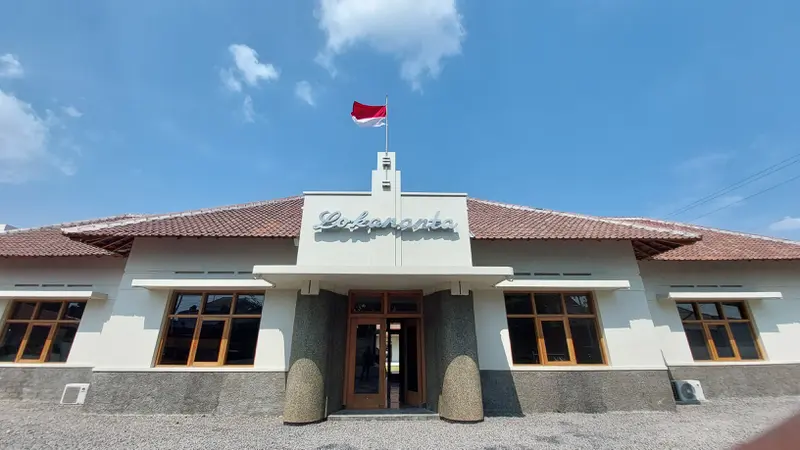

Lokananta

Studio rekaman pertama dan tertua di Indonesia yang berlokasi di Solo.
info lengkap : Lokananta didirikan tahun 1956 sebagai studio rekaman pertama di Indonesia. Tempat ini awalnya digunakan untuk merekam siaran Radio Republik Indonesia (RRI) dan menyimpan arsip musik nasional seperti lagu daerah, pidato kenegaraan, serta rekaman budaya Nusantara.Fungsi sekarang Sekarang Lokananta menjadi destinasi wisata edukasi musik dan sejarah. Pengunjung bisa melihat koleksi piringan hitam, alat rekaman lama, studio musik, serta area kreatif modern.Keunikan tempat ini menjadi,Studio rekaman tertua di Indonesia,Menyimpan ribuan arsip musik tradisional,Pernah merekam lagu nasional dan pidato penting negara,Sekarang jadi ruang kreatif dan wisata sejarah musik.
Jam buka: 09.00 – 16.00 WIB
Lokasi:Jalan. Ahmad Yani No.379, Kerten, Laweyan, Surakarta
Tiket masuk: Rp 20.000
Rating : ★★★★ 4.8/5 (3,2rb ulasan wisatawan)
Pemesanan :Klik pesan